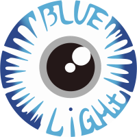

Open-source Web-based DICOM medical image viewer with 2D/3D MPR, Volume Rendering, and DICOMweb integration.
Main single-page application viewer supporting MPR, 3D VR, measurements, annotations, and DICOMweb PACS connectivity.
Open ViewerDICOMweb Query/Retrieve interface to search studies, patients, and series across connected PACS servers.
Open Search UILightweight, minimalist DICOM viewer variant optimized for fast loading and essential 2D image review.
Open Lite Mode